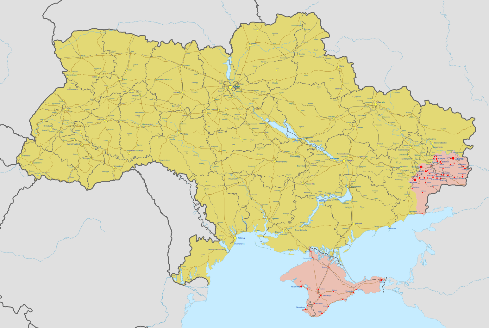

History
The Russo-Ukrainian War began in 2014 with Russia's annexation of Crimea and escalated in 2022 when Russia launched a full-scale invasion of Ukraine. Ukraine, supported by Western countries, resisted the invasion, leading to heavy fighting and territorial changes. The war has caused significant displacement and disruption, with ongoing geopolitical implications.

Casualties and Losses
Russia: Approximately 60,000 military deaths
Ukraine: Around 70,000 military deaths
Civilian Casualties:
Ukraine: Over 30,000 civilian deaths
Russia: Estimated in the thousands
Over 13 million people displaced from Ukraine, with 7 million refugees.
But did it affect Life Expectancy?
Life expectancy
The line chart below illustrates the change in life expectancy in Ukraine and Russia from 2014 to 2022. 2022 is a clearly marked year of the full-scale invasion. Use the checkbox to see life expectancy of both genders.
War has had a visible impact
This chart presents life expectancy trends in Russia and Ukraine from 1960 to 2022, revealing a concerning recent decline, particularly in Ukraine. While both nations have generally seen improvements in life expectancy over the long term, the data shows a marked downturn in recent years, likely due to the combined effects of the COVID-19 pandemic and the war in Ukraine. Notably, the decline in life expectancy appears more pronounced for men in Ukraine, especially after 2022. This disparity likely reflects the direct impact of the war, with men being more likely to be involved in combat and suffer war-related casualties. While both genders are affected by the conflict's broader consequences, such as disrupted healthcare and economic hardship, the data suggests a disproportionate impact on male life expectancy in Ukraine due to the nature of the conflict.